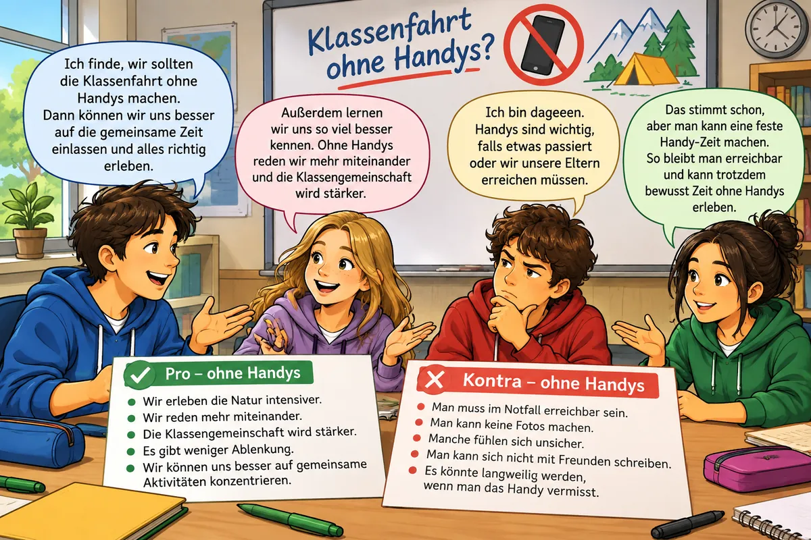

Wähle eines der Themen
Alle weiteren Stationen passen sich deinem Thema an. Du kannst später wechseln.
Die Checkliste: Überzeugt ein Argument?
CHECKLISTE: ARGUMENTE ÜBERPRÜFEN
- Ist klar, ob es ein Pro- oder ein Kontra-Argument ist?
- Enthält das Argument eine Behauptung?
- Wird die Behauptung begründet?
- Wird die Begründung mit einem Beispiel veranschaulicht?
Wähle zuerst in Station 1 ein Thema.
Prüfe die vier Argumente oben wie eine Lernpartnerin oder ein Lernpartner: Kreuze Ja oder Nein an.
Wähle zuerst in Station 1 ein Thema.
👍 Zwei Pro-Argumente notieren
Formuliere zwei Pro-Argumente, die für deinen Vorschlag sprechen. Achte darauf, dass jedes Argument eine Behauptung, eine Begründung und ein Beispiel enthält. Die KI prüft mit der Checkliste. ✨ KI prüft
Wähle zuerst in Station 1 ein Thema.
👎 Kontra-Argumente – und wie du sie entkräftest
Formuliere ebenso zwei Kontra-Argumente, die gegen deinen Vorschlag sprechen. Wer die Gegenseite kennt, kann besser überzeugen. ✨ KI prüft
Wähle zuerst in Station 1 ein Thema.
MERKE
Ein Kontra-Argument du, indem du …
- den Einwand zuerst ernst nimmst: „Das ist zwar richtig, jedoch …“
- eine Lösung anbietest: „Das Problem lässt sich lösen, indem …“
- oder zeigst, dass der Vorteil wichtiger ist: „Wichtiger finde ich …, weil …“

Sammle Argumente, die die Kontra-Argumente entkräften ✨ KI prüft
Wähle zuerst in Station 1 ein Thema.
⚔️ Duell gegen die KI
Wähle zuerst in Station 1 ein Thema.
- Die KI bringt einen Einwand gegen deinen Vorschlag.
- Du entkräftest ihn: Nimm ihn ernst und nenne eine Lösung oder ein Gegenargument mit Begründung.
- Der Schiedsrichter prüft und verteilt Punkte.
Punkte: Einwand entkräftet = 2 Punkte für dich. Halb = je 1 Punkt. Nicht entkräftet = 2 Punkte für die KI.
Wähle zuerst in Station 1 ein Thema.
Formuliere deine Argumente aus
Schreibe einen zusammenhängenden Text, den du in der Diskussion vortragen kannst. Die KI überprüft ihn wie eine Lernpartnerin mit der Checkliste. Überarbeite ihn, bis alles ✓ ist. ✨ KI prüft
Ich bin dafür, dass … (Standpunkt)
Erstens …, weil … Zum Beispiel … / Außerdem …, denn …
Man könnte einwenden, dass … Das ist zwar richtig, jedoch …
Deshalb bitte ich euch / Sie, …
Wähle zuerst in Station 1 ein Thema.
🙌 Körpersprache und Ausdrucksweise
Auch die Körpersprache und die Ausdrucksweise sind für ein erfolgreiches Gespräch wichtig.
SortierenÜberlegt, wie ihr eure Argumente mit einer überzeugenden Geste unterstützen könnt. Probiert es vor dem Spiegel oder mit einer Lernpartnerin, einem Lernpartner aus.
Rückmeldung geben und Lerntagebuch
FEEDBACK GEBEN
- Beginne mit etwas Positivem.
- Sag konkret, was dir gefallen hat und was fehlt.
- Verwende Ich-Botschaften: „Mir hat gefallen, dass …“
- Gib einen Tipp zur Verbesserung.
Gib einer Mitschülerin eine Rückmeldung ✨ KI prüft
Wähle zuerst in Station 1 ein Thema.